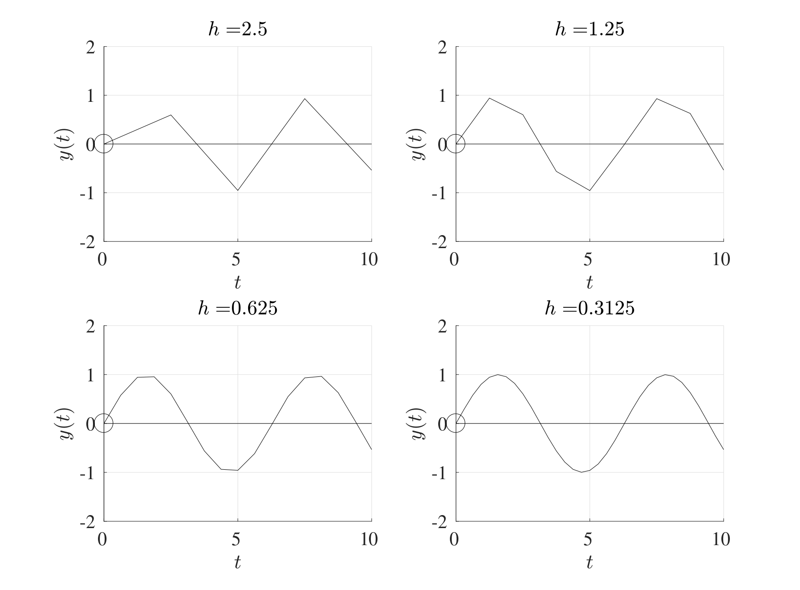
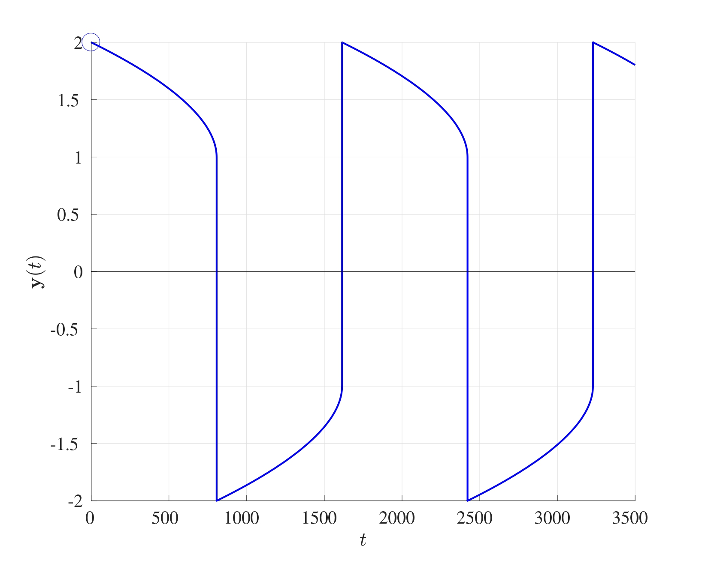

7 Implicit IVP Solvers
In some cases, IVPs can be difficult to solve because of the non-linearily of its terms, this is where Implicit Methods should be used to accomodate for these issues.
7.1 Backwards Euler Method
Consider the Euler method at the starting time \(t=t_0\). The value of the function \(y\) at \(t_1=t_0+h\) is approximated by \[ y(t_1) \approx Y_1=Y_0+hy'(t_0) \] and this gives an upper bound for a stable stepsize of \[ h_0=2\min\left(\frac{|\Re(\lambda_k)|}{|\lambda_k|^2}\right) \] in order to ensure that the Euler method is computationally stable. However, suppose that this modified slightly by using the gradient at \(y(t_1)\) rather than at \(y(t_0)\), in other words, suppose that the value of \(y\) at \(t_1\) is approximated by \[ y(t_1) \approx Y_1=Y_0+h\underline{\underline{y'(t_1)}}. \] This approach is known as the Backwards Euler Method and is an implicit procedure since the value of \(y'(t_1)\) is not known to begin with.
The general formulation is as follows: Consider the system of differential equations \[\boldsymbol{y}'=A\boldsymbol{y}+\boldsymbol{b}(t) \quad \text{with} \quad \boldsymbol{y}(0)=\boldsymbol{y}_0, \quad x \in [t_0,t_f].\] Discretise the interval \([t_0,t_f]\) into \(N\) equal subintervals, each with width \(h=\frac{t_f-t_0}{N}\). At the time step \(t=t_n=t_0+nh\), the backwards Euler method is \[\boldsymbol{Y}_{n+1}=\boldsymbol{Y}_n+h\boldsymbol{y}'(t_{n+1})=\boldsymbol{Y}_n+h\left[ A\boldsymbol{Y}_{n+1}+\boldsymbol{b}(t_{n+1}) \right].\] This can be rearranged to give \[(I-hA)\boldsymbol{Y}_{n+1}=\boldsymbol{Y}_n+h\boldsymbol{b}(t_{n+1}).\]
Rearranging further fives the basis for the Backwards Euler iteration which is \[\boldsymbol{Y}_{n+1}=(I-hA)^{-1}\left[\boldsymbol{Y}_n+h\boldsymbol{b}(t_{n+1})\right]\] whereas the standard Euler method in matrix form is \[\boldsymbol{Y}_{n+1}=(I+hA)\boldsymbol{Y}_n+h\boldsymbol{g}(t_{n}).\] The Euler method requires explicit calculations using matrix multiplications but the backwards Euler method requires matrix inversion instead.
7.2 Stability of the Backwards Euler Method
Consider the initial value problem in its scalar form \[\frac{\mathrm{d} y}{\mathrm{d} t}=\lambda y+b(t) \quad \text{with} \quad y(0)=y_0.\] The backwards Euler method at the time \(t=t_{n+1}=t_0+(n+1)h\) gives \[Y_{n+1}=(1-h \lambda)^{-1}\left[Y_n+hg(t_{n+1})\right].\] This initial condition can be perturbed by adding a small parameter \(\varepsilon\neq 0\) to give the perturbed differential equation \[\frac{\mathrm{d} z}{\mathrm{d} t}=\lambda z+g(t) \quad \text{with} \quad z(0)=y_0+\varepsilon.\] The backwards Euler then yields \[Z_{n+1}=(1-h \lambda)^{-1}\left[Z_n+hg(t_{n+1})\right]\] The differential equations in \(Y\) and \(Z\) can be subtracted to give a perturbation term \(E\) where \[E_{n+1}=Z_{n+1}-Y_{n+1}=(1-h \lambda)^{-1}\left[Z_n-Y_n\right]=(1-h \lambda)^{-1}E_n.\] Notice that once again, the forcing function \(g(t)\) has been eliminated and therefore does not affect the stability of the backwards Euler method. The differential equation for \(E\) will have the initial condition \(E_0=Z_0-Y_0=\varepsilon\). This expression can be used to represent \(E_n\) in terms of \(\varepsilon\) recursively as: \[\begin{multline*} E_n=(1-h\lambda)^{-1}E_{n-1}=(1-h\lambda)^{-2}E_{n-2}\\ =\dots=(1-h\lambda)^{-(n-1)}E_1=(1-h\lambda)^{-n}E_0=(1-h\lambda)^{-n}\varepsilon. \end{multline*}\] \[\implies \quad E_n=(1-h\lambda)^{-n}\varepsilon.\] This means that the method is stable for stepsizes \(h\) that satisfy \(|1-h\lambda|>1\) and since \(\lambda<0\) for an asymptotically stable system, then this inequality is always satisfied. This means that the backwards Euler method is stable for all stepsizes \(h>0\), no matter how large.
Consider the differential equation \[ y'=-100y+100\sin(t) \quad \text{with} \quad y(0)=1. \] In this case, \(\lambda<0\) meaning that this differential equation is asymptotic stable. The maximum allowable stepsize for the Euler method is \(h_0=\frac{2}{|-100|}=0.02\). However, the backwards Euler method is stable for any stepsize \(h\) as seen below (very large stepsizes will still converge but they will not give any useful information).

The formulation presented above also holds for sets of differential equations in the same way with one difference. Instead of having \((1-h\lambda)^{-1}=\frac{1}{1-h\lambda}\), the procedure for systems will require the matrix inverse \((1-\lambda A)^{-1}\) or the MATLAB backslash operator can be used instead.
7.3 Order of Accuracy
The backwards Euler method is numerically stable for all values the stepsize \(h\) and has the same order of accuracy as the Euler method, i.e. the local truncation error is of \(\mathcal{O}\left(h^2\right)\) while the global integration error is of \(\mathcal{O}\left(h\right)\). However, this increased stability comes at a cost, the backwards Euler methods requires double the computational cost compared to the Euler method.
7.4 Stiff Differential Equations
Stiff sets of differential equations with a large value of the total computational cost \(N_0\) can be very difficult to solve numerically using explicit methods but implicit methods can work very well. MATLAB has its very own built-in stiff differential equation solver under the command ode15s and this can be implemented exactly as ode45. This solves sets of differential equations implicitly using numerical differentiation of orders 1 to 5.
Consider the set of differential equations on the interval \([0,3500]\) \[\begin{align*} & \frac{\mathrm{d} y_1}{\mathrm{d} t}=y_2 & y_1(0)=2 \\ & \frac{\mathrm{d} y_2}{\mathrm{d} t}=1000(1-y_1^2)y_2-y_1 & y_2(0)=0. \end{align*}\]
This is a very stiff set of differential equations, solving this using ode45 takes upwards of 92 seconds while solving using the stiff solver ode15s requires a mere 0.233 seconds (depending on you machine). The result of solving this differential equation is shown below for \(y_1(t)\) only since \(y_2(t)\) takes very large values and this distorts the graphical interpretation.

Using the stiff solver optimises the stepsizes for stiff regions. Particularly, if a region is deemed to be considerably “stiff”, the ode15s will use smaller stepsizes to solve the problem but if there is a region where the differential is not “stiff”, then larger stepsizes will be used. Therefore, ode15s usually requires fewer grid points overall, for instance to solve the above set of differential equations, ode15s only requires 1,836 grid points while ode45 requires 7,820,485 grid points, that is over 4,200 times more grid points than ode15s. This just goes to show that stiff differential need implicit methods, even though the cost for every step is greater than that of an explicit method, fewer steps are required in total.
An alternative stiff differential equation solver is ode23s which achieves that same outcome as ode15s but with a lower accuracy and more grid points using only second and third order methods.